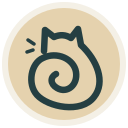

Two enlarged symbols and six new drawings from your references.
Large previews with 48 px and 32 px checks · standalone SVG paths · consistent ivory rims
Yamazaki
Device enlarged 18%
Maison Kayser
Device enlarged 20%
Childhood Bakery
Rocking horse · muted coral
Harlan’s
Champagne H · deep slate
Fresh Wheat Bakery
Diagonal wheat · pale gold
Nibbles Baking Nook
Bitten loaf · caramel
Wooloomooloo Prime
Dotted W · warm bronze

Dee Dee Bakery
Spiral cat · ink teal